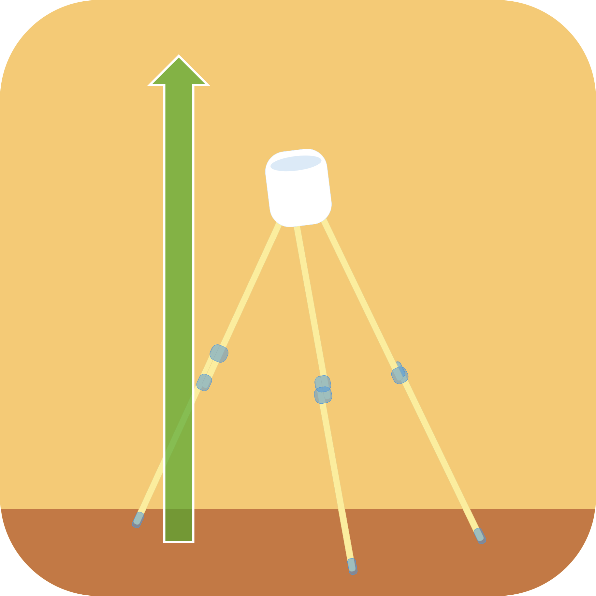
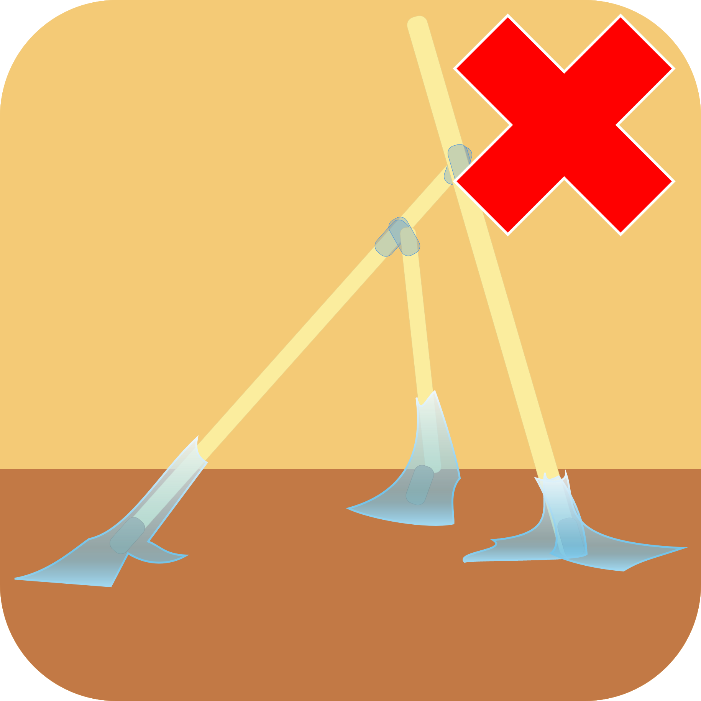
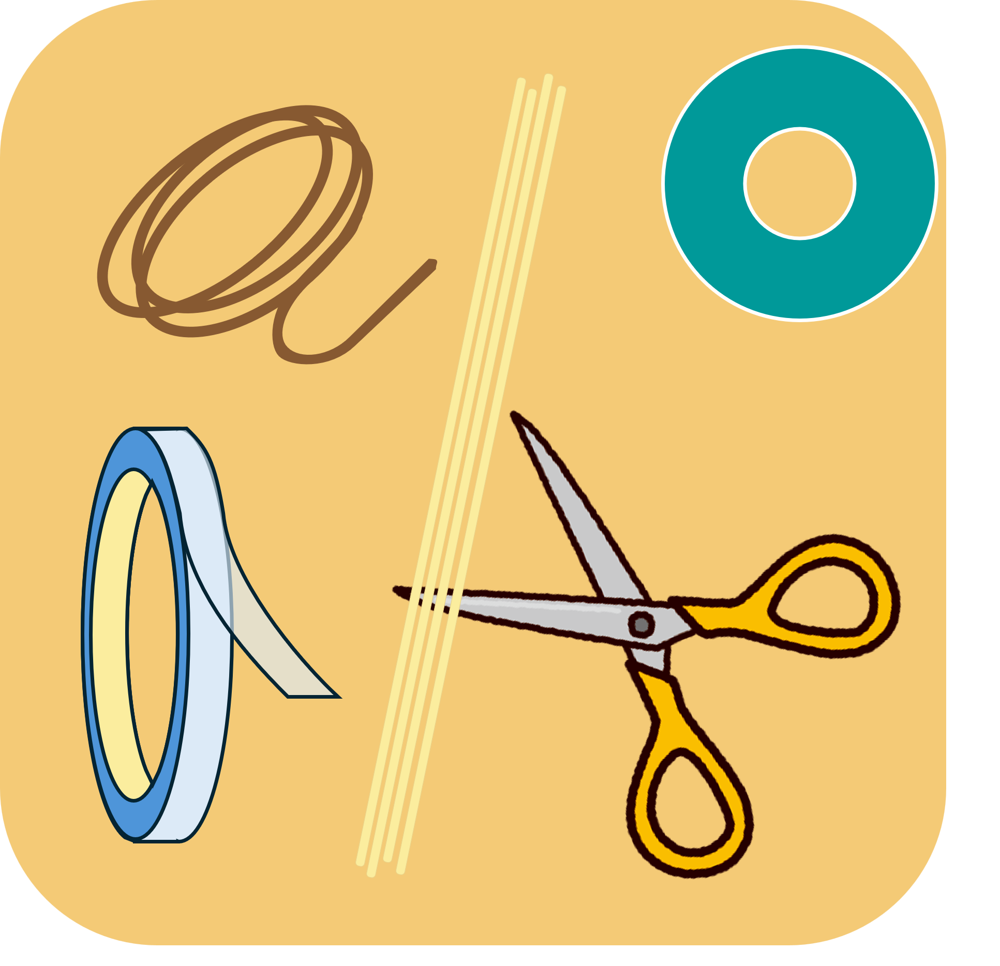
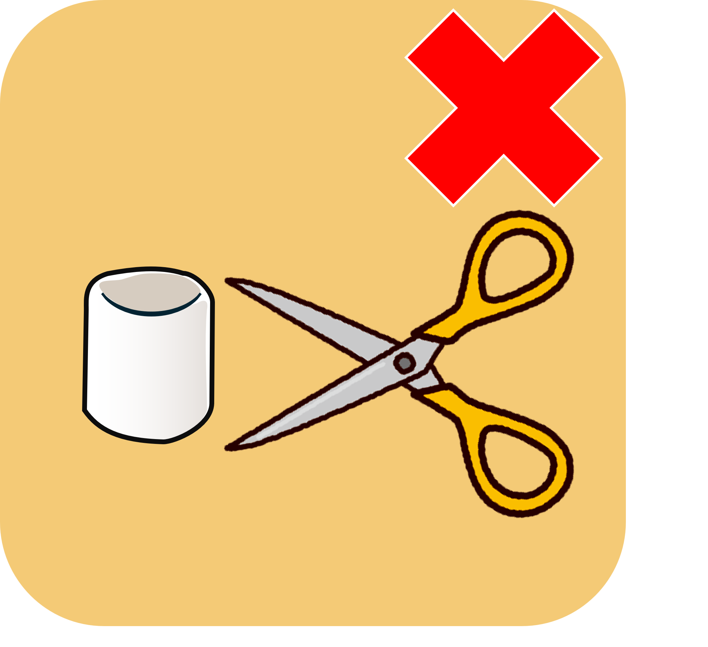
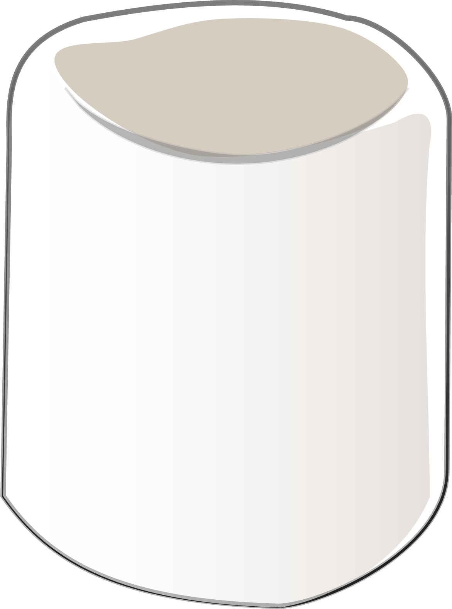

TEAM BUILDING WORKSHOP
マシュマロ
チャレンジ
パスタとテープ、ひも、そしてマシュマロ。
18分で、いちばん高いタワーをつくろう。
FIRST THINGS FIRST
この時間だけは、
画面を閉じよう。
ここから終了まで、PC・スマートフォンは使用しません。
TEAM ASSIGNMENT
チーム分け
自分の名前を確認して、
チームの机に移動してください。
CHOOSE A PRESENTER
発表者を
決めよう。
最後に各チーム30秒で発表します。
チームの代表者を、いま決めてください。
COUNTDOWN
CHECKLIST
備品を
確認しよう。
すべて揃っているか、チームごとにチェックしてください。
RULE 01 / 07
できるだけ、
高く。
自立可能なタワーを立ててください。

RULE 02 / 07
頂上に、
マシュマロ。
タワーの上にマシュマロを置きます。パスタに刺してもOKです。

RULE 03 / 07
足場は、
固定しない。
テープでタワーを机に貼り付けてはいけません。

RULE 04 / 07
材料の加工は、
OK。
パスタ、テープ、ひもは、切ったり貼ったりできます。

RULE 05 / 07
マシュマロは、
切らない。
マシュマロは、ひとつのまま使用してください。

RULE 06 / 07
計測中も、
自立。
手を離した状態でタワーが立っていなければなりません。
RULE 07 / 07
制限時間は、
18分。
作戦タイムも制限時間に含まれます。
READY TO BUILD?
18分間の
チャレンジ。
使ってよいのは、確認した5つの備品だけ。
準備ができたらタイマーをスタート！
TIME REMAINING
MEASUREMENT
高さを
計測しよう。
タワーから手を離し、マシュマロの最上部までの高さを入力してください。
FINAL RESULTS
A TEAM
おめでとう！
REFLECTION
つくった後が、
いちばん大事。
チームで振り返り、気づいたことを発表しましょう。
01なぜ、この順位・高さになった？
02どうすれば1位になれた？
03次の挑戦で変えることは？
TEAM TALK
PRESENTATION
30秒で、発表。
Aチームの発表
気づいたこと、工夫したこと、次に変えたいことを共有してください。
PRESENTATION TIME
AWARD TIME
健闘をたたえて、
優勝チームに拍手！

✦GREAT WORK
おつかれさまでした！
小さくつくって、試して、学ぶ。
今日の発見を、次のチャレンジへ。